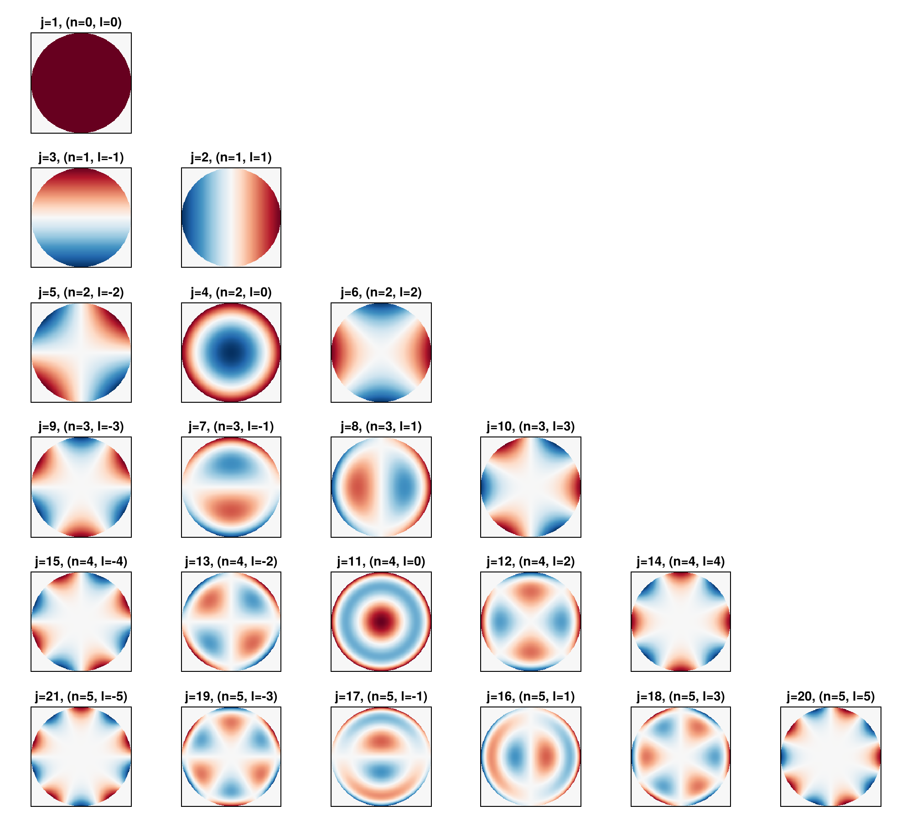

Zernike Polynomials
The Zernike module provides tools for working with Zernike polynomials, which are commonly used to represent optical aberrations in microscopy PSF models.
Conventions
This module uses the following conventions:
- Noll Indexing: All functions use the Noll single-index scheme, starting from 1
- RMS Normalization: Polynomials are normalized to have RMS = 1 over the unit circle
- Units: Coefficients typically represent wavefront error in units of wavelength
Core Types
The ZernikeCoefficients type is the main container for Zernike polynomial coefficients, used to represent both phase and amplitude aberrations:
# Create coefficients for 15 Zernike terms
zc = ZernikeCoefficients(15)
# Access and modify directly using Noll indices
zc.phase[4] = 0.5 # Add 0.5λ RMS of defocus
zc.phase[11] = 0.2 # Add 0.2λ RMS of spherical aberrationCore Functions
The Zernike module provides several core functions for working with Zernike polynomials:
zernikepolynomial(n, l, ρ, θ): Compute the Zernike polynomial with radial ordernand azimuthal frequencylat polar coordinates(ρ, θ)radialpolynomial(n, m, ρ): Compute just the radial component of a Zernike polynomialevaluate_pupil(coeffs, grid_size): Generate a complex pupil function from Zernike coefficients
Analysis Functions
Additional utility functions for analyzing Zernike coefficients include:
rms(coeffs): Calculate RMS values for magnitude and phase coefficients (excluding piston)significant_terms(coeffs, threshold): Return list of significant terms above a threshold
Index Conversion
Functions for converting between different Zernike indexing schemes:
noll2nl(j): Convert from Noll single index to (n,l) indicesnl2noll(n, l): Convert from (n,l) indices to Noll single indexnoll2osa(j): Convert from Noll to OSA/ANSI indexosa2noll(j): Convert from OSA/ANSI to Noll indexnl2osa(n, l): Convert from (n,l) indices to OSA/ANSI single indexosa2nl(j): Convert from OSA/ANSI single index to (n,l) indices
Common Zernike Polynomials
The table below shows the relationship between Noll indices, (n,l) pairs, and common aberration names:
| Noll (j) | Radial (n) | Azimuthal (l) | Common Name |
|---|---|---|---|
| 1 | 0 | 0 | Piston |
| 2 | 1 | 1 | Tip (X-Tilt) |
| 3 | 1 | -1 | Tilt (Y-Tilt) |
| 4 | 2 | 0 | Defocus |
| 5 | 2 | -2 | Oblique Astigmatism |
| 6 | 2 | 2 | Vertical Astigmatism |
| 7 | 3 | -1 | Vertical Coma |
| 8 | 3 | 1 | Horizontal Coma |
| 9 | 3 | -3 | Vertical Trefoil |
| 10 | 3 | 3 | Oblique Trefoil |
| 11 | 4 | 0 | Primary Spherical |
| 12 | 4 | 2 | Vertical Secondary Astigmatism |
| 13 | 4 | -2 | Oblique Secondary Astigmatism |
| 14 | 4 | 4 | Vertical Quadrafoil |
| 15 | 4 | -4 | Oblique Quadrafoil |
Visualizing Zernike Polynomials
using MicroscopePSFs.Zernike
using CairoMakie
function evaluate_polynomial_grid_nl(n::Integer, l::Integer, grid_size::Integer=201)
j = nl2noll(n, l)
coeffs = ZernikeCoefficients(j)
coeffs.mag[1] = 0.0 # was set to 1 by default
coeffs.mag[j] = 1.0
field = evaluate_pupil(coeffs, grid_size)
result = real.(field)
return result
end
function plot_zernike_nl_grid(max_n::Integer=4)
fig = Figure(size=(1000, 180 * max_n))
burd = reverse(cgrad(:RdBu))
for n in 0:max_n
l_start = -n + (mod(-n, 2) != mod(n, 2) ? 1 : 0)
l_values = l_start:2:n
row = n + 1
for (col_idx, l) in enumerate(l_values)
j = nl2noll(n, l)
ax = Axis(fig[row, col_idx],
aspect=DataAspect(),
title="j=$j, (n=$n, l=$l)",
xticklabelsize=0,
yticklabelsize=0,
yreversed=false)
z_data = evaluate_polynomial_grid_nl(n, l, 201)
max_val = maximum(abs.(z_data))
min_val = -max_val
heatmap!(ax, range(-1, 1, length=size(z_data, 1)),
range(-1, 1, length=size(z_data, 2)),
z_data',
colorrange=(min_val, max_val),
colormap=burd)
hidedecorations!(ax)
end
end
return fig
end
fig = plot_zernike_nl_grid(5)
save("zernike_polys.png",fig)
This visualization shows the first 21 Zernike polynomials laid out in a grid. Each plot is labeled with both its Noll index j and the corresponding (n,l) indices. Red regions represent positive values, blue regions represent negative values, and white represents zero. Posiive y axis is up to match Wikipedia.
Usage in PSF Models
The Zernike module is primarily used for representing aberrations in PSF models:
# Create Zernike coefficients with 15 terms
zc = ZernikeCoefficients(15)
# Add some aberrations
zc.phase[4] = 0.5 # 0.5λ RMS of defocus
zc.phase[11] = 0.2 # 0.2λ RMS of spherical aberration
# Create a ScalarPSF with these aberrations
psf = ScalarPSF(1.4, 0.532, 1.518, coeffs=zc)
# Create a VectorPSF with these aberrations
vector_psf = VectorPSF(1.4, 0.532, base_zernike=zc, n_medium=1.33)For a full API reference and details on all available functions, see the API Reference section.